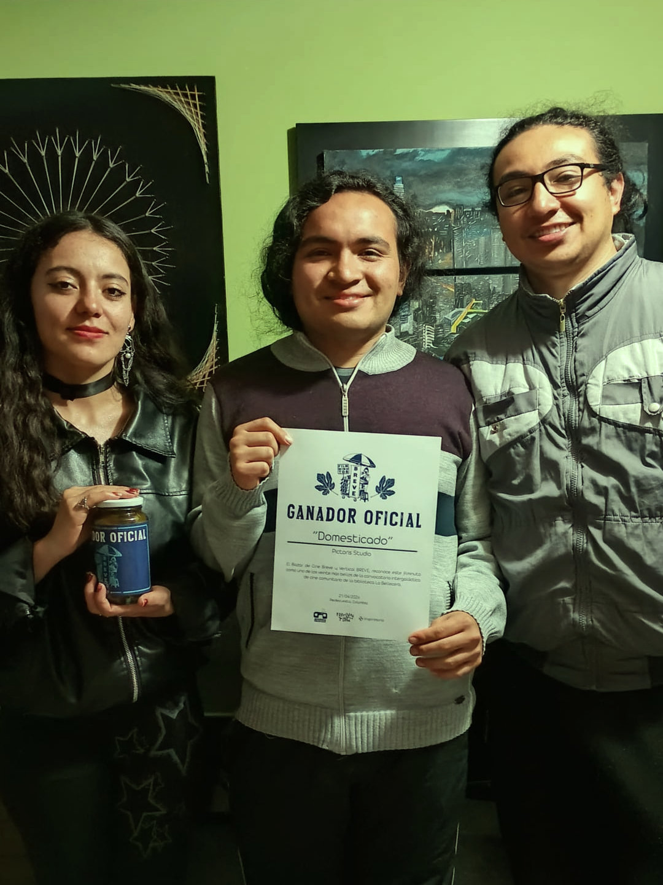
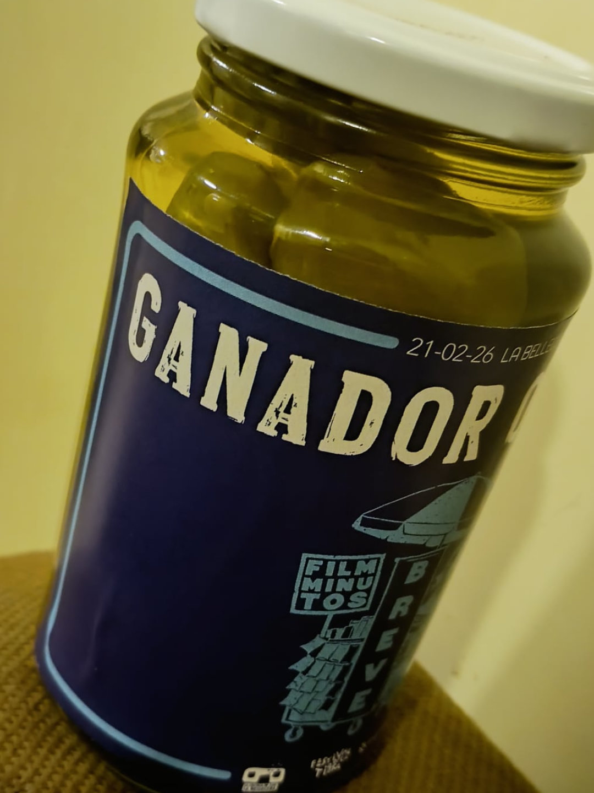
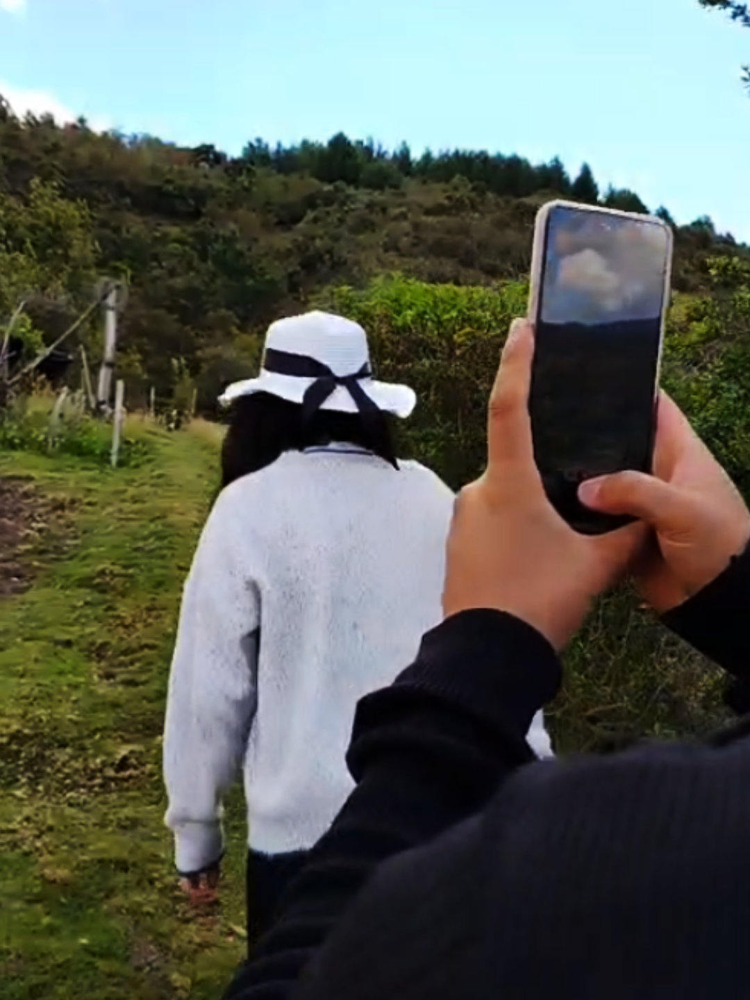
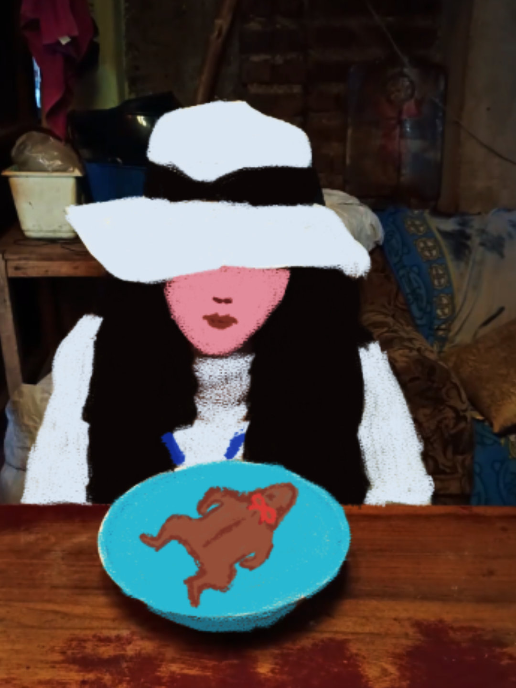
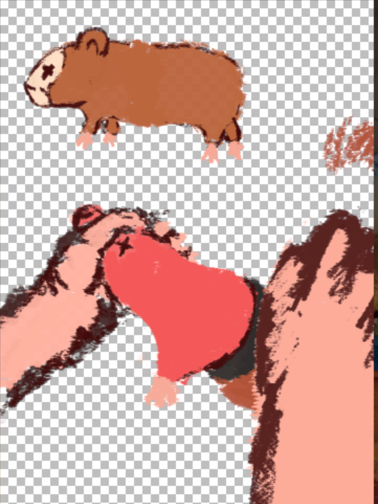
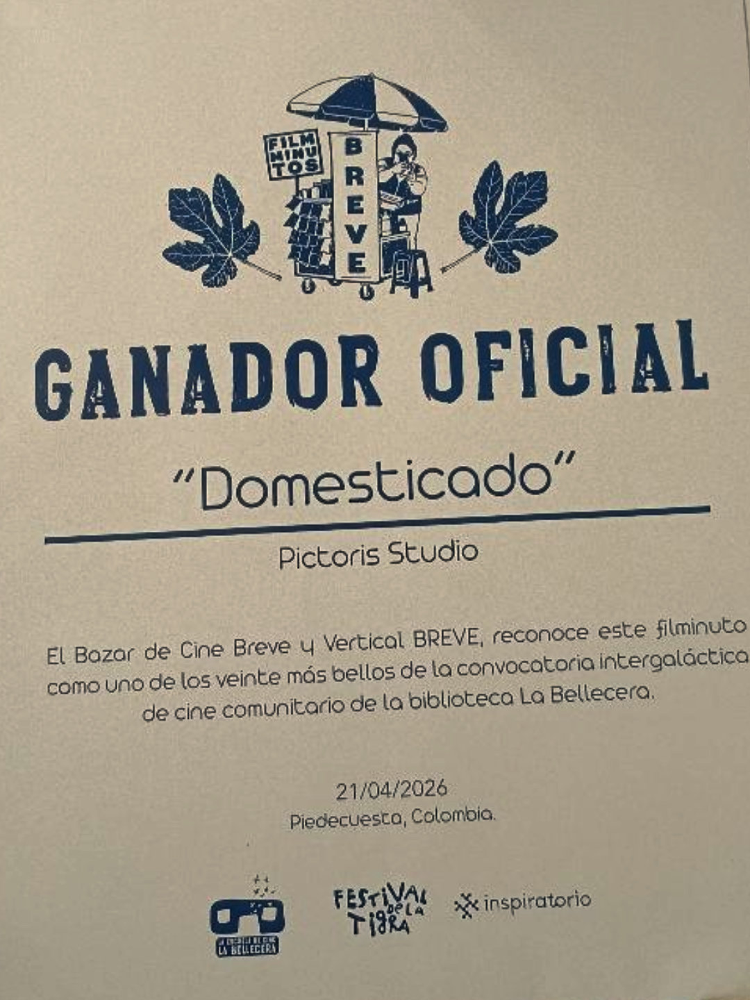
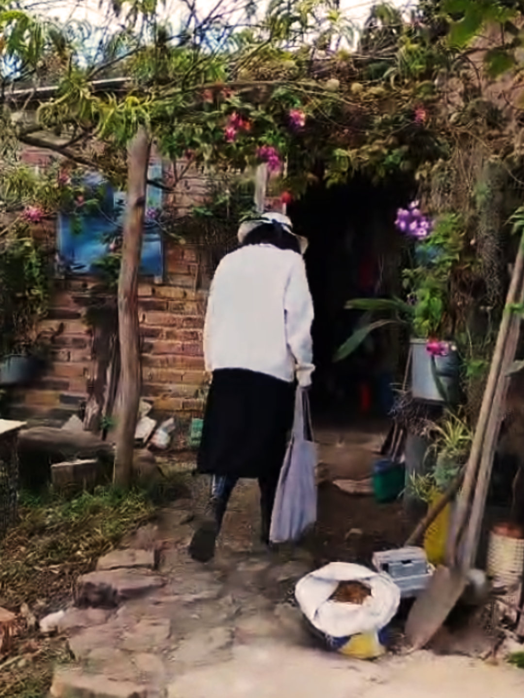

Animación · Filminuto
Domesticado
Filminuto animado ganador de FESTIVAR y Breve: Bazar de Cine Breve Vertical, realizado en Piedecuesta, Santander. Una pieza breve de ritmo gráfico y narrativa concentrada.
Selección visual
Fotogramas del filminuto
La galería reúne imágenes del proyecto para mostrar su tratamiento visual, composición vertical y atmósfera animada.
Galería
Momentos de Domesticado





